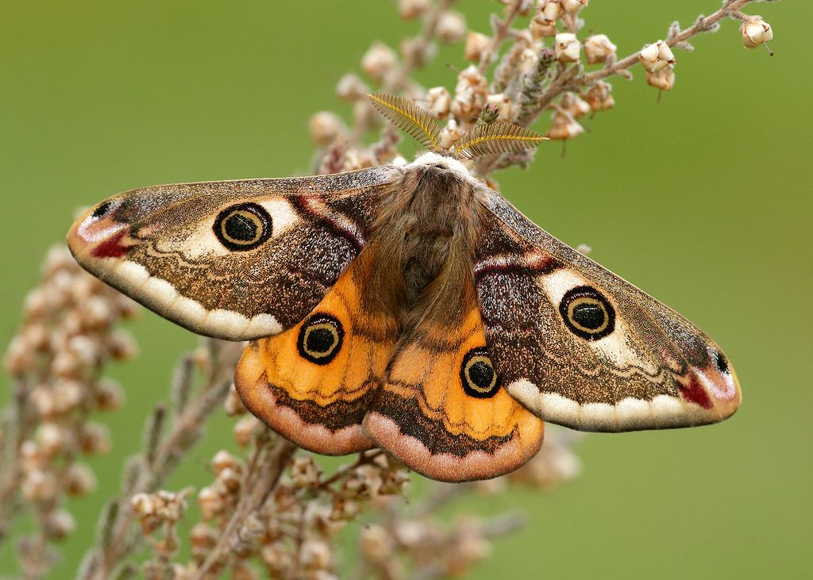
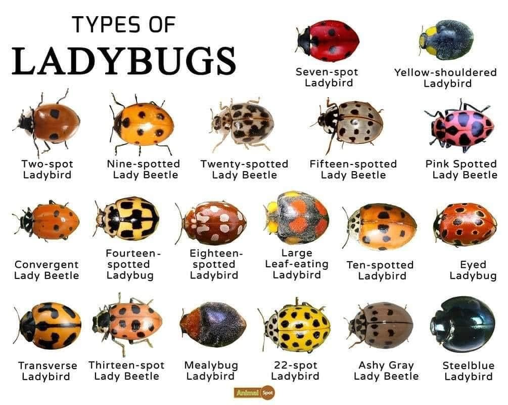
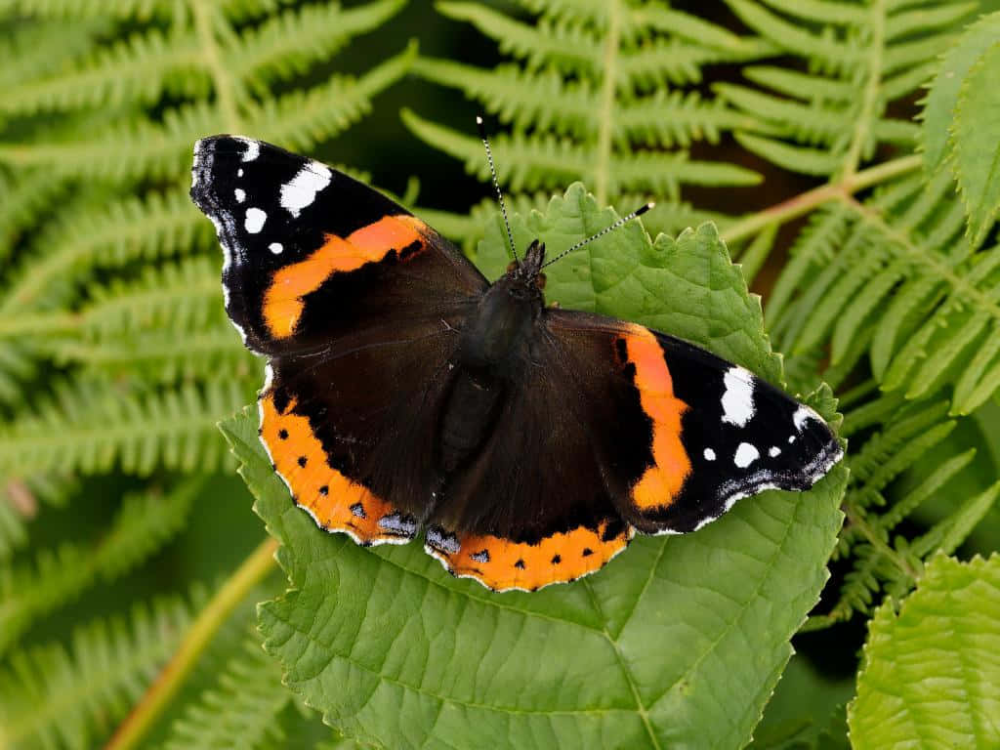
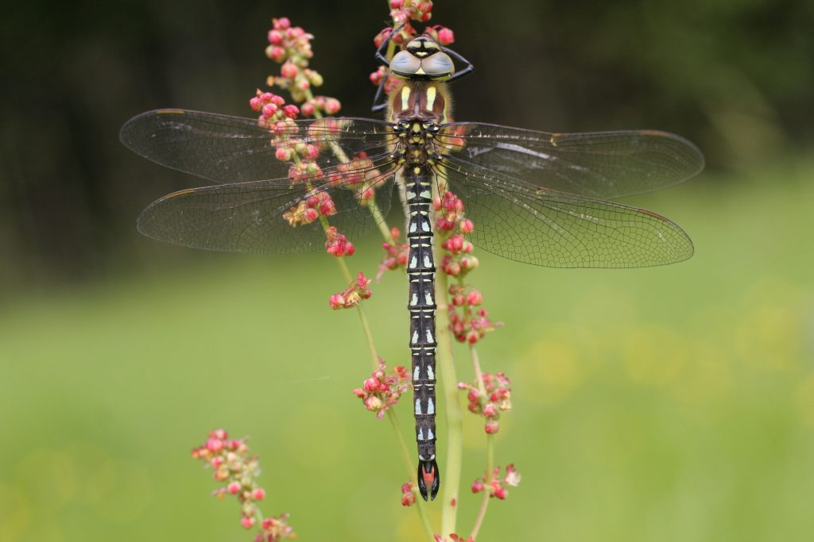
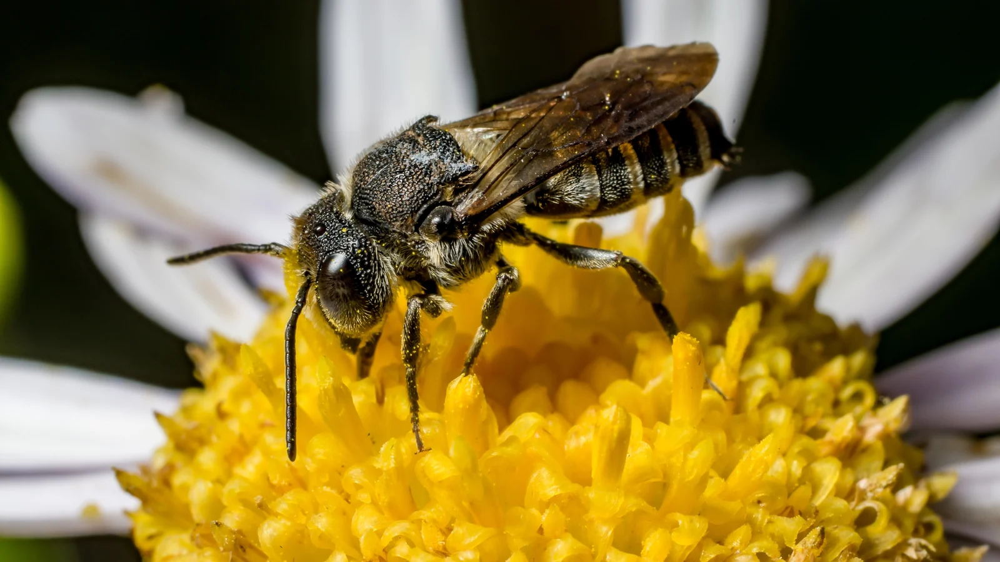

Welcome to the insect section of the website! Here you can find some of the most common insects that live among us here in Ireland.
Emperor Moth

The first insect we are looking at today is the 'Emperor Moth.' Given its name, it is often mistaken
for a butterfly considering its large size. Female moths can reach a size up to 4cm long and males
are a bit smaller, reaching a size of 3cm.
These moths have beautiful colours consisting of black, orange, brown, and white.
The Emperor moth can often be found near coaastal dunes and bogs, these habitats allow the moth
life cycle.
They are mainly nocturnal insects, but when a male is looking for a female, they can often be seen
during the day on their femal-seeking adventure.
Ladybird

The ladybug (or ladybird) is commonly found throughout Ireland, it is the easiest beetle to spot given
its pretty red colour and black spots. They usually roam in peoples' gardens, parks, and the countryside.
The ladybird is one of the 27 species of ladybirds. There are ladybirds with 2 spots, 7 spots, 10, 11...
and they are all a different species.
They usually live between 1 to 2 years, depending on their habitat, environment, and diet. Some species
of ladybirds live only for a few months.
Butterfly

Butterflies lie in the large insect category, there are about 30 different species of butterfly in Ireland.
They can be found in grasslands, forests, bogs, and gardens. Some species of butterfly migrate for the seasons,
one of which is the painted lady butterfly.
During the winter months, it flies to Northern Africa, and for summer months, it flies back to Ireland.
Unfortunately, many species are endangered due to the loss of habitat, use of bug repellants, and climate change.
If you are interested in looking more into depth about the different butterflies in Ireland; there are several Butterfly
houses that you can visit in Ireland, like the butterfly house in Malahide Park.
Dragonfly

In Ireland, there are 30 dragonfly and damselfly species. Among these, 14 are resident dragonflies,
11 are resident damselflies, and 5 are vagrant species.
Dragonflies play an important role by the water, they eat mosquitoes and other insects that are known to
be a nuisance to us.
Irelands habitats like bogs,lakes, and rivers provide good breeding areas for dragonflies.
Same as butterflies, dragonflies are protected by several conservatories to prevent extinction in Ireland.
A dragonflies lifespan lasts usually around 1 to 3 years, but it may be longer if they hibernate during winter months.
Bee

In Ireland, there are 100 different species of bee, inccluding the honeybee, 21 different species of bumblebee, and the remaining 78 species of the solitary bee. Bees are our most important and hard-working insects. They pollinate our crops and flowers, and make good honey. A bees lifespan varies, worker bees live around a few weeks to a couple of months during honey-making season. Queen bees, who are responsible for laying eggs, can live up to 5 years if her colony takes good care of her. The bee diet consists of nectar and pollen, however, the queen bee eats 'royal jelly' which is a secretion produced by the worker bees.